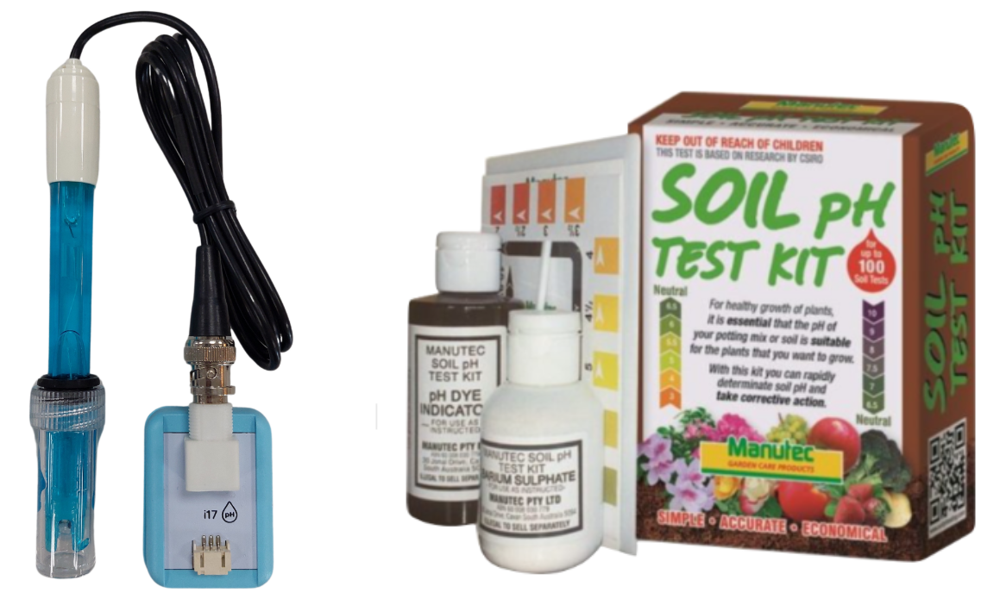
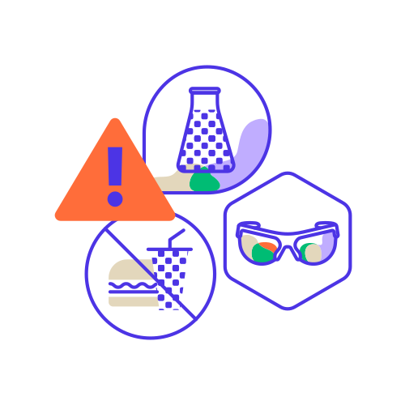
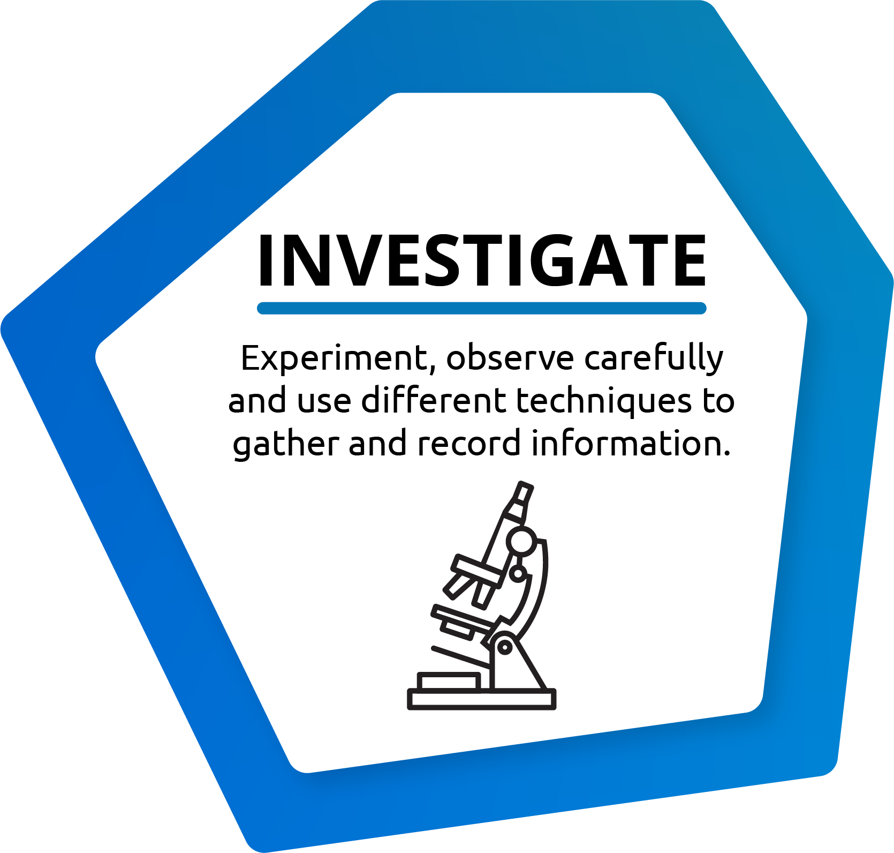
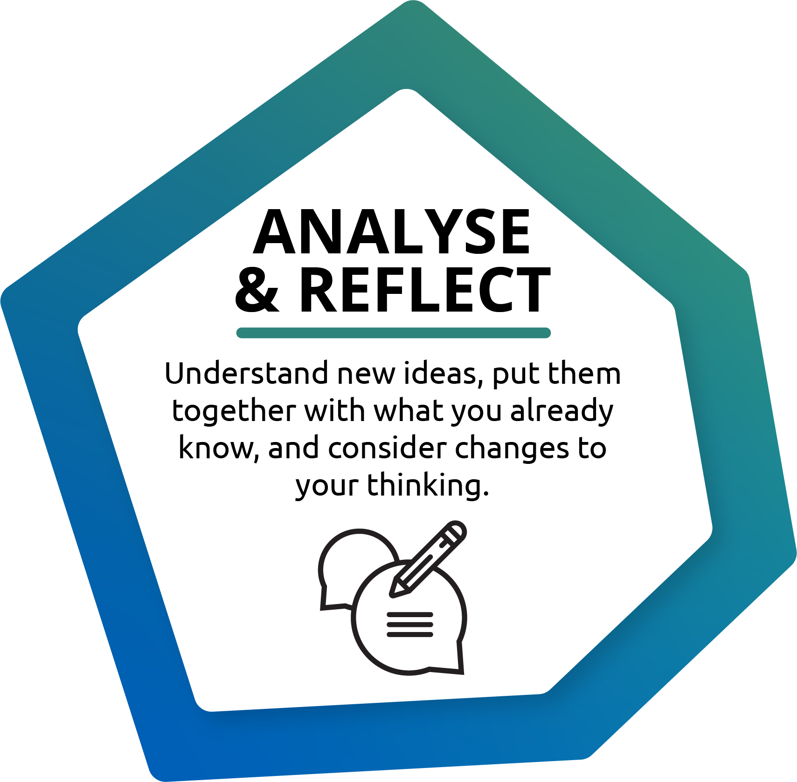

The pH level of something tells us how acidic or basic it is. The pH
scale goes from 0 to 14.
Measuring the pH of a water or soil sample is important because it tells
us about water and soil quality in an area. It’s helpful to know how
acidic or basic something is as different plants and animals can’t
survive in environments that have a pH level that is too high or too
low.
The pH Measuring kit is used to measure the pH of a substance. It tells
you how acidic or basic a water or soil sample is.
Select a question to investigate from the following:

Write/copy the question you are investigating on page 6 of your logbook
Use the following template to write your guess.
"If I ____, then I think ____ will happen because ____."
If I...What will you change or test?
Then I think...What do you think will happen?
Because...Why do you think that? Use your own ideas
or what you already know.
Example: If I test the pH of the soil in the planter box, then I think it will be neutral because plants grow best in soil that isn't too acidic or too alkaline.
Write your prediction on page 6 of your logbook
Once you have asked a question and made an educated guess, you need to plan your investigation. This means deciding what you are going to do to test your guess.
Consider the following questions to plan your investigation:
Example: I will use the Soil pH Test kit to test the pH of the soil in the planter box.
Write your plan on page 7 of your logbook
Read and follow the below safety instructions when using this kit

Wash the water pH meter with distilled water after each use so it stays accurate.
The water pH meter has glass parts and can break. Notify an adult
of any spills or broken glass.
Store chemicals in a
safe place away from reach of children and pets
Wear safety goggles when mixing chemicals with dirt.
Watch this short video to learn how to set up the water pH meter.
Watch this short video to learn how to use the water pH meter.
Watch this short video to learn how to collect soil samples.
Watch this short video to learn how to test soil samples using the soil pH meter.
When conducting your investigation, you must keep track of your findings/results. You can do this in a number of different ways, for example:

Click the button below “Download Editable PDF”, to download a table
that will help you collect your results. Click the ‘Example’ button to
see a worked example for how to fill in your data.
When you have filled the table in, copy (or insert a picture) your
results on page 7 of your logbook
After your investigation, it is important to make sense of your results and find out what they mean. This stage will help you answer your original investigation question and see if your prediction was correct or not.

Click the button below “Download Editable PDF”, to download questions
that will help you analyse and reflect. Click the ‘Example’ button to
see a worked example for how to analyse your data.
Copy your answers on page 8 of your logbook